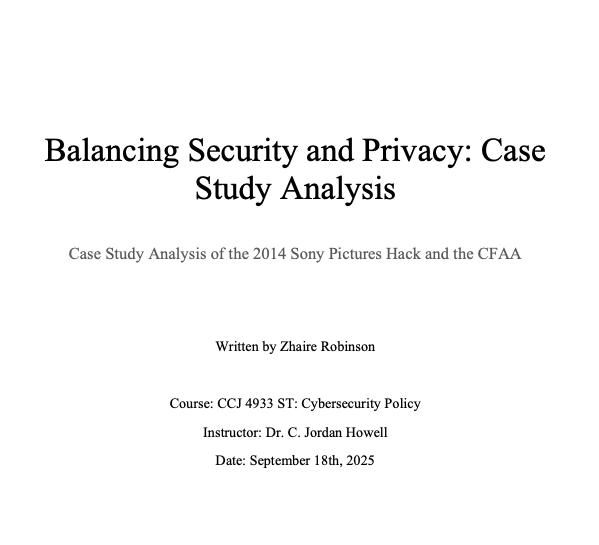
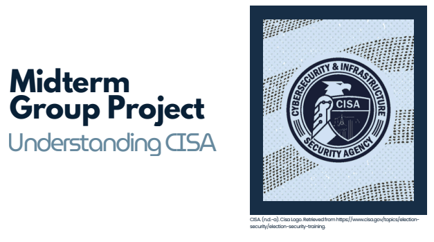

Balancing Security and Privacy: Case Study Analysis
Case Study Analysis of the 2014 Sony Pictures Hack and the CFAA
View Project
Breaking Down CISA:PowerPoint
Midterm group project analyzing cybersecurity policy and CISA law as well as how it can be improved .
View Project
Global Coalition for Standardized Cybersecurity:Powerpoint
Created a framework For an International Cybersecurity Governance Treaty
View Project
CUI Training Certification:
Handling Controlled Unclassified Information and secure data practices
View Certification